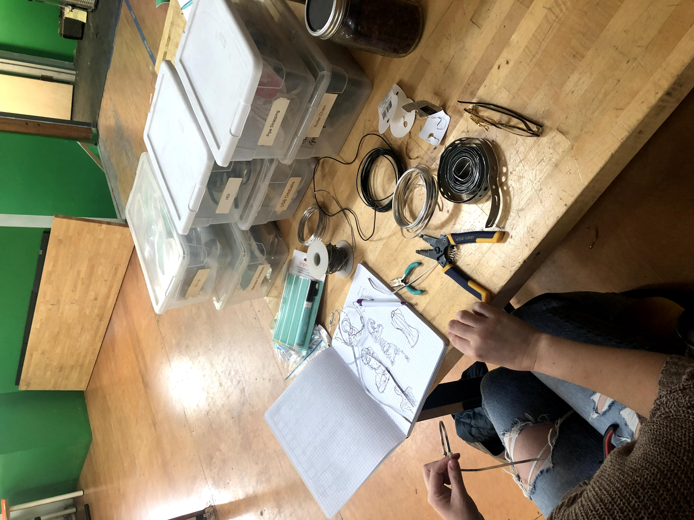

Creative Groups
There are a handful of different ways to work with us, including creative groups, therapy and coaching. Our group offerings change based on interest and capacity. Here are some examples of group offerings at Unstoppable. If you’d like to inquire about current group offerings, or if you have an idea for a new group, please reach out here!
Design For Anxiety
In this program, participants will make projects as a way to help manage anxiety and resist perfectionism. Participants work with the facilitator to explore their anxiety, how it functions in their life, and how they'd prefer it to function instead. They have support to come up with an idea and set goals for what they want to accomplish within the 14–week program. Participants will meet weekly to build and test prototypes, give and receive feedback and support, and eventually document and share their projects.
Participants can work toward resisting the effects of anxiety in several ways. They might make things that help manage anxiety, like a sensory item or mood tracking tool. They might explore and express the anxiety through stories, creating a project like a comic or blog. Or, they might pursue projects in any other form—including technology, card games, clothing, comics, jewelry—in an intentional encounter with and exploration of new ways of relating to anxiety and perfectionism.
Participants will have support and guidance in picking projects to work on and defining standards of success that will allow them to finish the project in 14 weeks. This program is a great opportunity for adults who enjoy technology, design, and/or craft and want to build their problem solving and anxiety management skills.
A Strange(d) Family Heirloom

For folks who have estranged or especially strained family ties, heirlooms can be a symbol of loss and brokenness, or they might not exist at all. In this small group program, participants will come together to explore their family stories and create an heirloom that reflects their family as it truly is. That could mean processing an estrangement by reclaiming or altering an existing family heirloom, creating something new to reflect a chosen family, or cresting an artifact that tells their family story in a new way.
Throughout the program, participants will be introduced to evocative and provocative storytelling and art-making about family, have opportunities to share and explore their family stories, and conceptualize, design, and create a project that they can cherish.
Maker Clubs and Creative STEAM Programming for Kids

We design and offer small group opportunities for kids to come together and work on problem solving, creativity, and collaboration for a variety of contexts and settings. Here are some examples of programs that Miriam has offered in the past. If you're interested in bringing something like this to children in your life, reach out here.
- Sensory Science at ASPIRE day camp. In this program, kids experimented with hands on projects that helped them develop self-awareness of their sensory preferences and needs. Projects included making slime, making scented lotions, and creating fidget toys. We also built a camp-wide frog habitat, but that part wasn't planned.
- Maker Club at Perkins School for the Blind. The Maker Club ran for several years, and high school aged kids with multiple disabilities took on a wide variety of projects over time. From a collaborative sculpture of a hawk — Perkins' mascot — to technology take-aparts, to “design challenge” competitions, every project had multi-sensory and multi-ability modes of engagement. An all-time favorite was the annual egg drop competition, where students used recycled materials to build a device to safely land an egg from a balcony in the student center.
- Science hour at the Manville School. In the science hour, elementary age students worked on projects designed to challenge their problem solving and confidence in a fun way. Students made slime (of course!), built catapults and kazoos out of popsicle sticks, and used chromatography to crack the case of a kidnapped class pet.
Project:Project

Project: Project is a coaching group for folks with executive dysfunction taking on a personal, professional, or creative project. The group meets weekly to provide structure, accountability, and scaffolding. During meetings, participants share progress, give and receive feedback to help each other move toward their goals, share resources and ideas to support improved executive functioning, set weekly goals for progress between sessions, and, most importantly, celebrate the big and small wins along the way.
Sewing for Body Image Healing

In this program, a small group of participants will meet together to explore their relationships with their bodies and clothes by sewing and fitting their own garments. The program brings together supportive conversation around body image healing with practical sewing skills for building a wardrobe that fits your body as it truly is.
Participants will conceptualize, source materials for, and make a clothing item that they can wear with comfort, confidence, and joy. They will also engage with texts and discussion questions designed to help people understand and share their personal relationships to their body in the context of diet culture and fatphobia. The group will also learn garment fitting techniques specific for fitting larger, curvier and/or gender non-conforming bodies.
This program is most appropriate for folks who have at least some garment sewing experience, but it is also open to brave beginners. You should be able to thread and operate your machine, have an idea of what “seam finishing” means, and feel confident enough to do some independent sewing outside of class time.